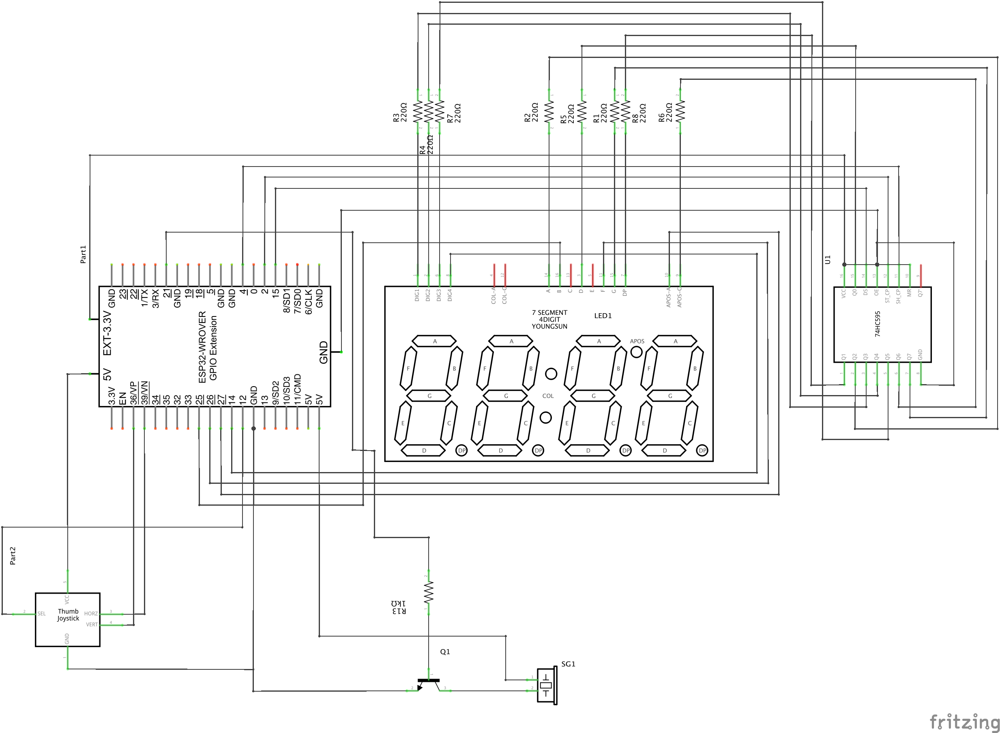
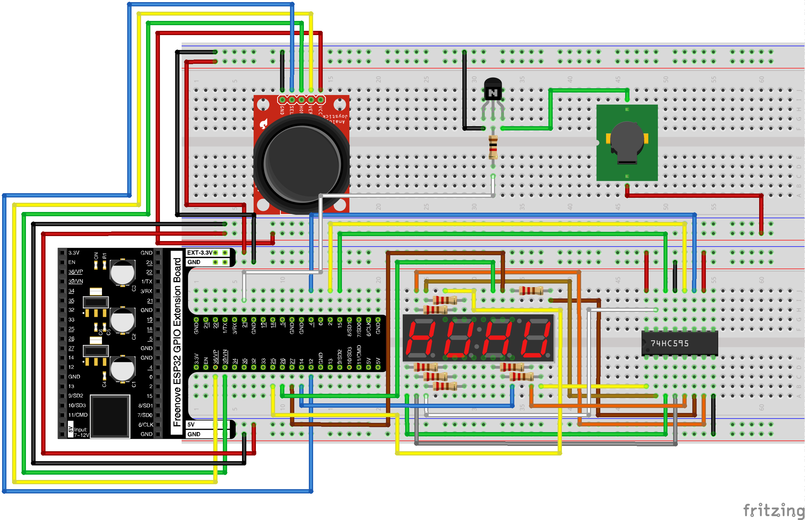
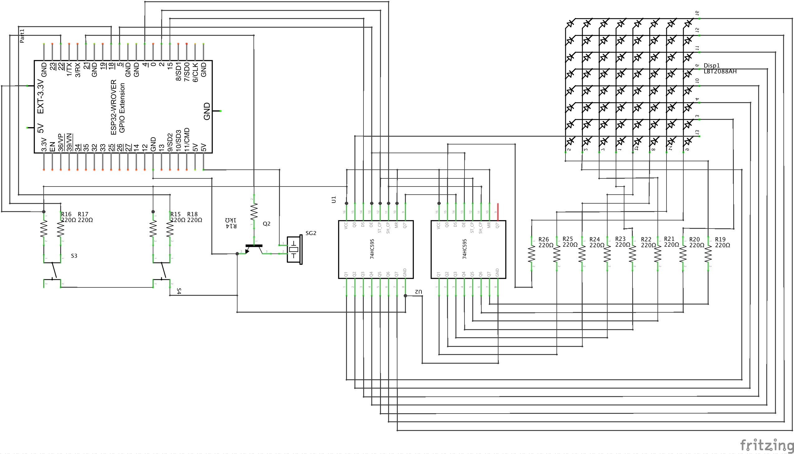
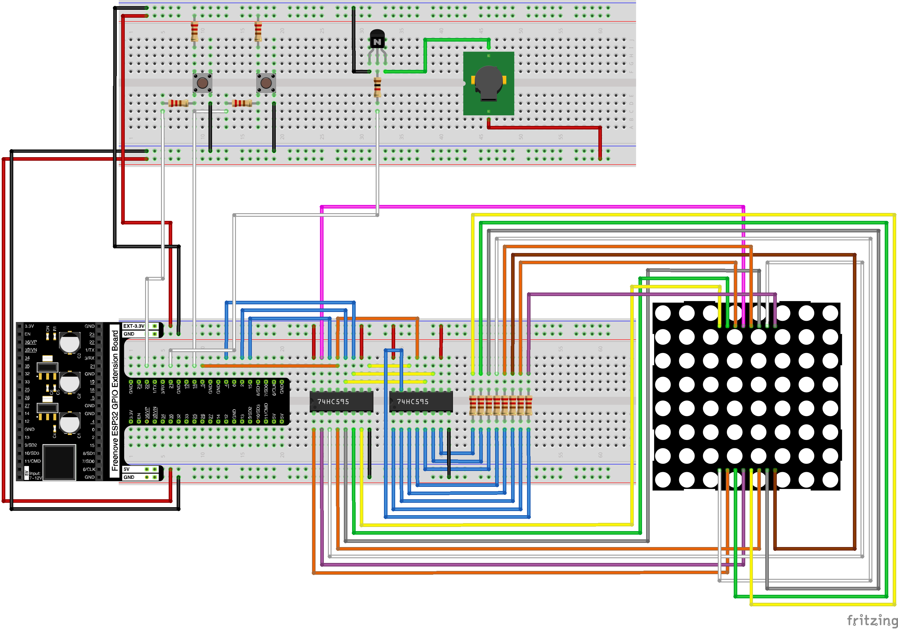
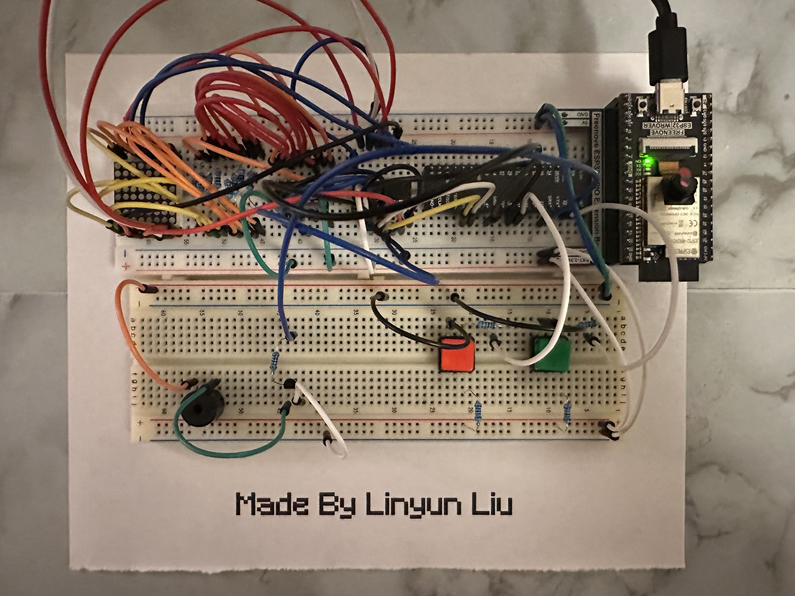

Lab Five 🍁
Joystick, 74HC595 & LED Bar Graph, 7-Segment Display, and LED Matrix
Linyun Liu
Project 1
Design and construct a circuit with a joystick, a buzzer, a 4-digit 7-segment display, a 74HC595, and other necessary electronic components. At the beginning, there is no message on the 4-digit 7-segment display. When you press the joystick down vertically (it is like a button), the 4-digit 7-segment display shows a message. When you push the joystick to the right, the 4-digit 7-segment display shows the message moving from the left to the right with some sound effects (s1) continually (going around). When you push the joystick to the left, the same message crosses from the right to left over the display with different sound effects (s2) continually (going around). When you push the joystick down, the message scrolls down with sound effects (s3). When you push the joystick up, the message scrolls up with sound effects (s4). Capture your settings and working circuit in photos and videos (the videos should include sound).
• LIST OF HARDWARE:
ESP32 x 1, Joystick x 1, Buzzer x 1, 4-digit 7-segment display, 74HC595, 1kΩ Resistor x 1, 220Ω Resister x 8, NPN Transistor x 1, Jumpers
• CIRCUIT DIAGRAM:
• BREADBOARD VIEW:
• PHOTO OF SETTING ON THE BREADBOARD:

• VIDEO:
• SOURCE CODE:
View DownloadProject 2
Design and construct a circuit that displays a short animation with some background music using two buttons, a buzzer, two of 74HC595, an LED matrix, and other necessary electronic components. When you press a button, the LED matrix starts to show an animation with some nice background music, which repeats continually. When you press the other button, both the animation and background music are paused. When the first button is pressed again, it restarts the animation with the music. Capture your settings and working circuit in photos and videos (the videos should include sound).
• LIST OF HARDWARE:
ESP32 x 1, Buzzer x 1, LED Matrix, Buttons x 2, 74HC595 x 2, 1kΩ Resistor x 1, 220Ω Resister x 8, 10kΩ Resister x 4, NPN Transistor x 1, Jumpers
• CIRCUIT DIAGRAM:
• BREADBOARD VIEW:
• PHOTO OF SETTING ON THE BREADBOARD:
• VIDEO:
• SOURCE CODE:
View Download